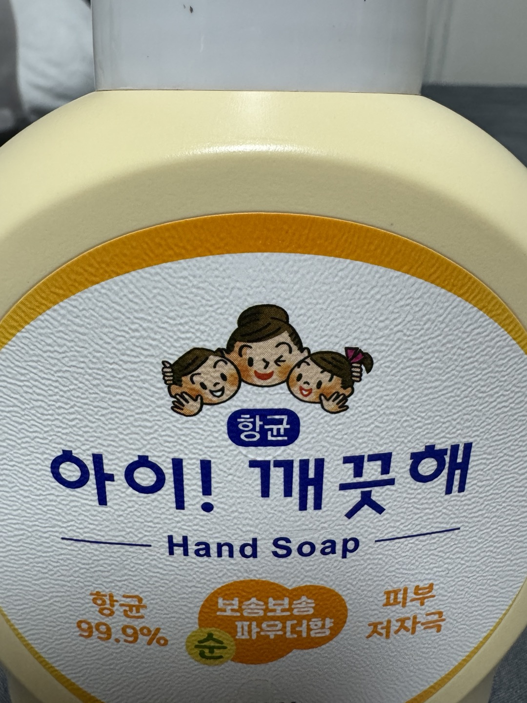
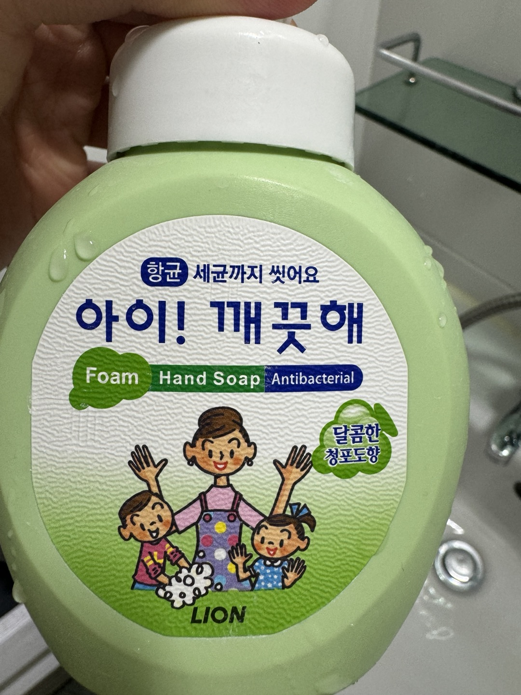
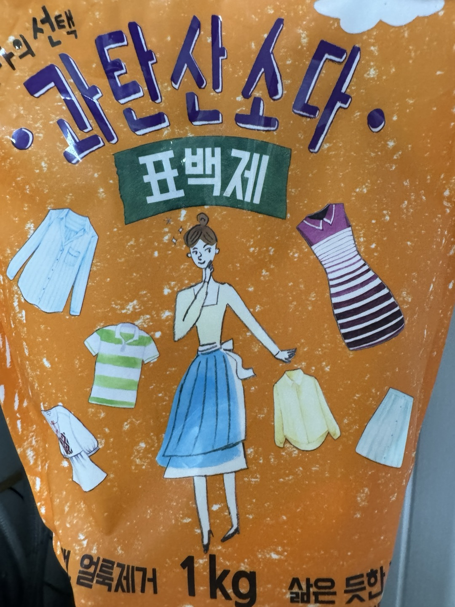
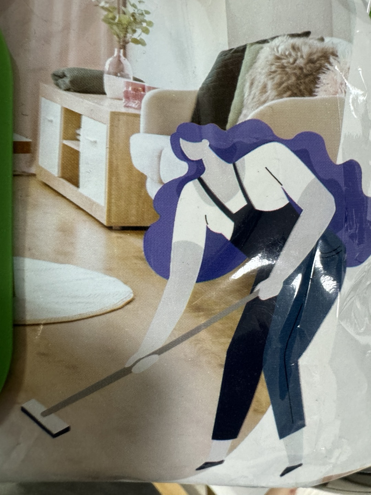

청소용품
   집에서 흔히 볼 수 있는 주방용품들이다. 비누, 과탄산소다, 걸레의 포장지에 모두 어머니로 보이는 여성이 그려져 있다. 집안일은 여성이 한다는 성 역할의 고정관념이다. 지금은 사회적인 인식이 많이 바뀌어 남녀 모두 집안일을 하지만, 아직 광고나 포장지에는 여성, 어머니가 있는 것을 볼 수 있다. 이제는 우리 사회도 많이 바뀐 만큼 남녀 모두가 그려져 있는 용품이 생기면 좋겠다.
집에서 흔히 볼 수 있는 주방용품들이다. 비누, 과탄산소다, 걸레의 포장지에 모두 어머니로 보이는 여성이 그려져 있다. 집안일은 여성이 한다는 성 역할의 고정관념이다. 지금은 사회적인 인식이 많이 바뀌어 남녀 모두 집안일을 하지만, 아직 광고나 포장지에는 여성, 어머니가 있는 것을 볼 수 있다. 이제는 우리 사회도 많이 바뀐 만큼 남녀 모두가 그려져 있는 용품이 생기면 좋겠다.
마트나 편의점에서 볼 수 있는 음식이다. 그 포장지에 요리사가 있는 경우가 있는데, 대부분의 요리사는 남자로 표현된다. 사진에는 없지만 오감자의 포장지에도 남자 요리사가 있다. 아직도 우리의 인식 속에 요리사는 남자라는 개념이 남아있을지도 모른다. 요리 프로그램을 보아도 남자 요리사가 대결하고, 우리나라의 대표적인 요리사가 백종원이다. 이렇게 흔히 볼 수 있는 음식 포장지에서도 고정관념을 보았다.
직업의 다양한 성 역할 고정관념이다. 학교, 학원 선생님은 대부분 남자이다. 패션 및 의류는 여자가 대부분이고, 농부는 늙은 남자, 아르바이트생은 젊은 여자이다. 사실 앞의 요리사만큼 성 역할 고정관념이 심하지는 않지만, 그래도 아직 우리의 인식 속에 남아있는 고정관념이다. 개인적으로 특히 모델이나, 아르바이트생은 여자로 그려지는 게 많게 느껴진다.
첫 번째 두 번째 사진을 보면 피부 미용에는 여자가 있고, 샴푸에는 남자가 있다. 남자도 피부미용을 많이 하는 추세이고 남녀 모두 여드름 패치를 붙이는데도 불구하고, 대부분 여성이 광고 표지에 있다. 미용상의 부분에서는 아직 남녀의 성 역할이 고정되어있다고 느낀다.
보통 2000년대 초반부터 그 전의 축구를 생각해 본다면 서양인이 주된 인물이다. 동양인이 활약하는 건 정말 극히 드물었고, 극악의 확률을 뚫고 활약한 대표적인 인물로는 차범근 선수를 뽑을 수 있다. 하지만 박지성을 시작으로 최근에는 손흥민, 김민재, 이강인, 황희찬 등이 해외에서 활약하고 있다. 이뿐만 아니라 미토마, 쿠보, 토미야스 등의 아시아 선수들이 활약하면서 해외 축구에도 하나둘 아시아 선수들이 보이기 시작했다. 최근 월드컵 포스터를 찾아보아도 손흥민이 메시 옆에 나란히 중앙이 있는 것을 볼 수 있다. 또 작년 아디다스 광고에서는 손흥민이 해외 축구에서도 대표적인 유명한 선수들과 함께 광고를 찍는 등 인종의 다양성이 생기고 있다. 손흥민이나 다른 선수들의 뛰어난 활약이 없었다면 이렇게 아시아인이 광고나 포스터에 없을 거다. 뛰어난 활약을 한 선수들도 대단하고, 점점 해외 축구에서도 인종의 다양성이 생기고 있어 기쁘다.